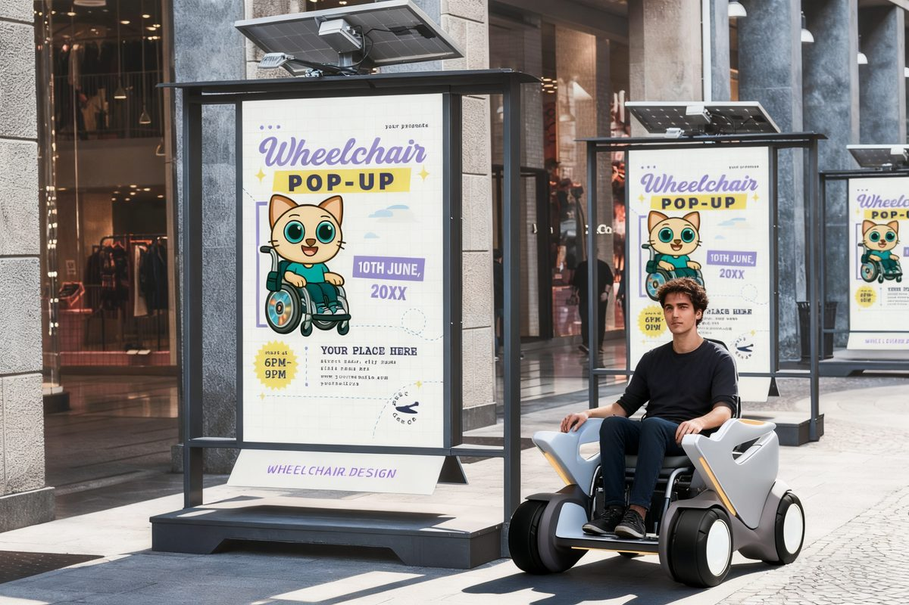
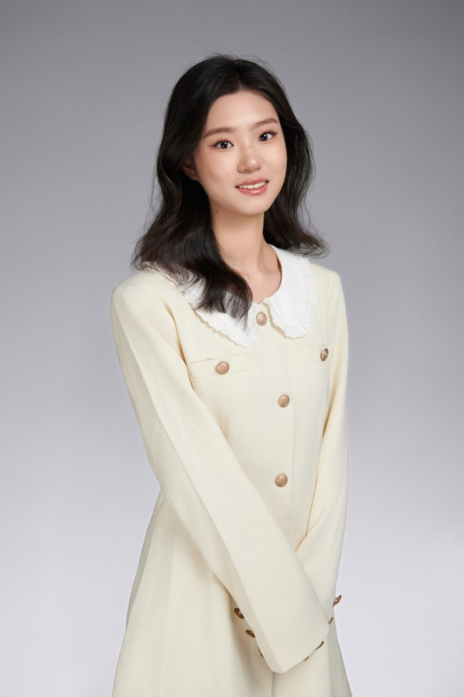
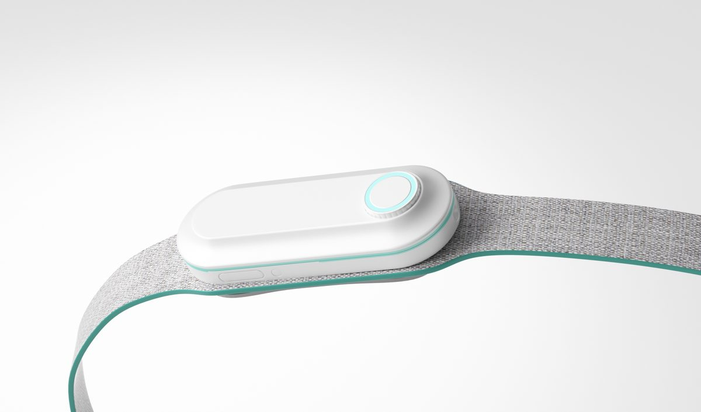
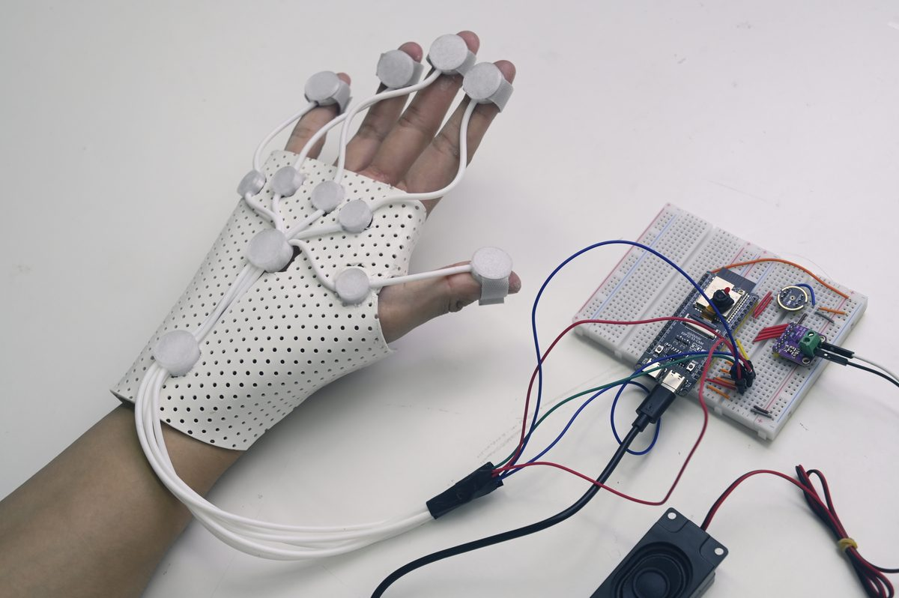
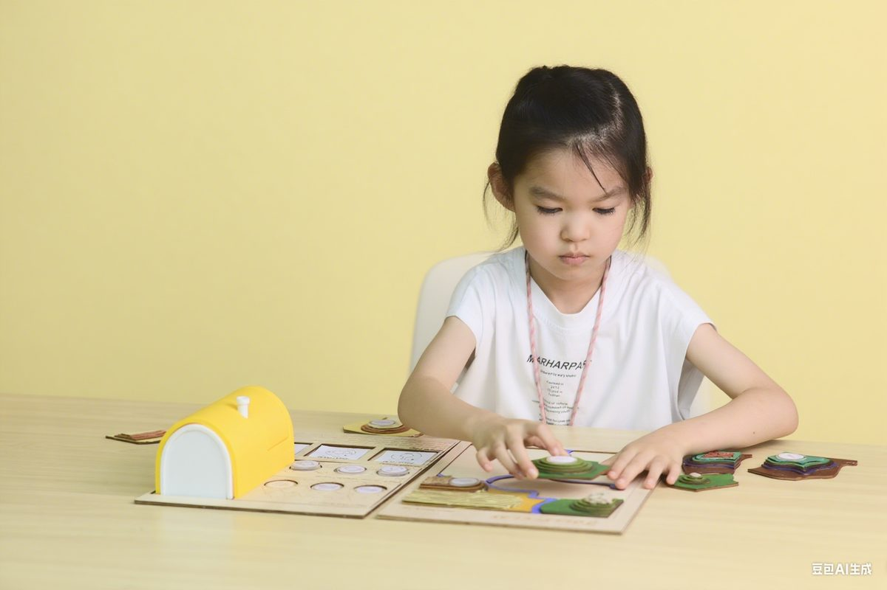
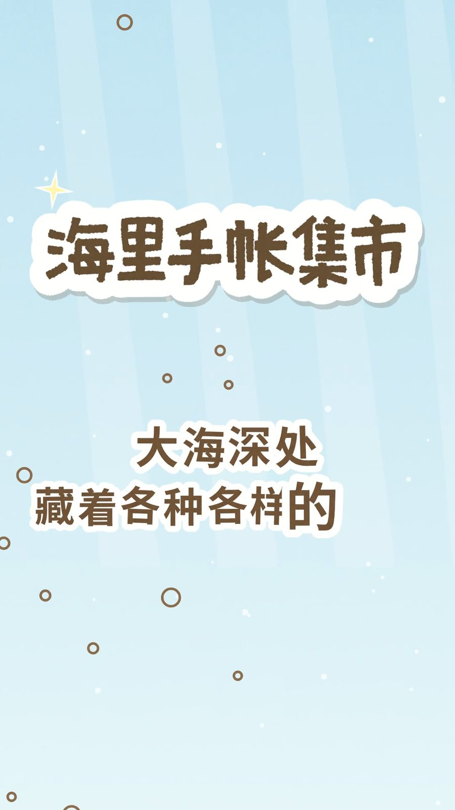
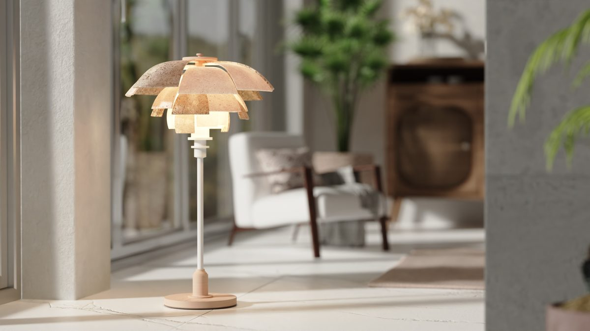

01 · 2024
Exoflex
模块化产品与服务系统设计，强调结构可拆解与使用流程的顺畅衔接，探索现代美学与用户中心功能的结合。
Industrial Designer & Creative Innovator
专注产品设计、用户体验与创意创新。把想法落地为可感知的物件与体验， 连接结构、交互与科技。来自浙江温州。

把设计当作连接人与技术的方式：结构清晰、体验友好、表达有态度。
申请号 202530131707.5 · 2025.03
申请号 202410541556.5 · 2024.04
覆盖产品结构、批判性设计、医疗辅助、教育与定格动画等方向。

模块化产品与服务系统设计，强调结构可拆解与使用流程的顺畅衔接，探索现代美学与用户中心功能的结合。

面向居家腹膜透析的可穿戴辅助腰带：整合智能模块与人机工学，让流程更轻、更聪明、更好操作。

批判性装置设计，结合 Arduino 与海洋意象，探讨自动化剥夺下的身体感知与可持续材料语言。

教育向产品与游戏化体验，结合 UX、3D 打印与交互，让学习过程更可玩、更易接近。

竖屏定格动画短片：用手帐集市的叙事节奏，把材质、光影与角色动作编织成可循环播放的视觉故事。

跨产品、UX 与服务设计的探索合集——不同命题下的快速实验、视觉表达与系统方案。
省级与国家级竞赛中的部分代表性成绩。
欢迎合作、实习与交流。无论是产品概念、视觉系统还是创业想法，都乐意听听。